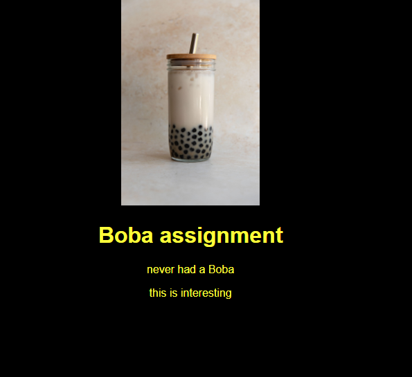
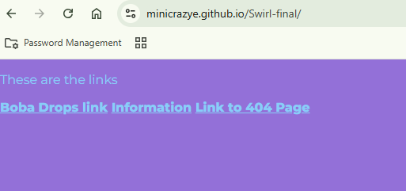

HTML and CSS
I have learned alof from using HTML and CSS I am certified even certified in it I have made some projects on it as well
HTML CertificationI did this project called Boba drops I used HTML and CSS code to make a website and I was able to learn how github works

The goal of this project was to understand how to make a website with HTML and CSS.
We made a style sheet to style the webpage and made a header and a couple sentences with a picture of a boba.
I also did a project called swirl where I made another website and have it link to my other pages

In this website I made a total of 3 pages, the index page which is the page of this image, a random page which could be anything we want, and a 404 page and I had to make it so when you click on the links they go to those pages